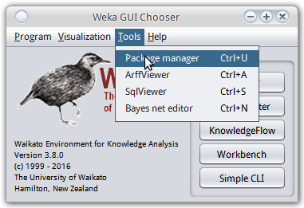

之前一直用weka的GUI界面做机器学习的任务, 感觉这个软件虽然界面丑, 不过确实是快速开展机器学期的利器. 关于GUI的weka使用以后有时间再写. 今天这篇记录一下最近使用的java版本的weka.
1. Include jars into project
weka官网的下载链接里选择linux版本的weka压缩包即可, 下载以后找到weka.jar文件, 在工程里将其include一下就可以使用了(btw, 现在开始放弃eclipse, 进入IDEA的怀抱了...).
weka的文档在解压缩的文件里有, 另外在线文档在: http://weka.sourceforge.net/doc.stable-3-8/
about libsvm...
关于libsvm需要有一点特别指出. weka自带的算法里是不包含libsvm的 (有个类似的SMO, 不过还是libsvm久经考验啊...), 需要使用weka的package manager安装. 打开package manager是在weka主界面的菜单里:

在package manager里搜索到libsvm安装即可. 然后(linux下)在主目录可以看到有个wekafiles文件夹, wekafiles/packages/LibSVM/目录下就是libsvm的内容.
需要指出的一点是, 要使用libsvm的话, 需要同时引用两个jar文件, 而且都叫libsvm.jar!!
这两个jar ...